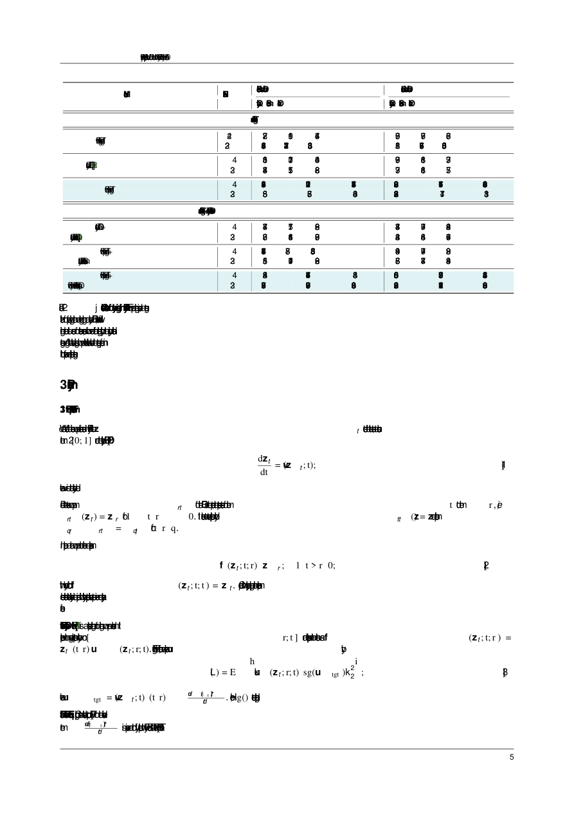

#1
★ 8/10
AnyFlow: Any-Step Video Diffusion Model with On-Policy Flow Map Distillation
AnyFlow：基于在策略流图蒸馏的任意步数视频扩散模型

图 Figure · Page 5 of paper
🎯 首个支持任意步数推理的视频扩散蒸馏框架，兼顾少步快速生成与多步质量提升
AnyFlow is the first any-step video diffusion distillation framework that scales quality with sampling steps via flow-map learning.
| 维度 | 中文 | English |
|---|---|---|
| ❓ 待解决 的问题 |
现有的一致性蒸馏方法（Consistency Distillation）可以加速视频生成，但存在一个关键缺陷：随着推理步数增加，生成质量反而下降或不再提升，无法像原始ODE采样那样"步数越多越好"。这限制了模型在需要高质量输出时的灵活性。根本原因在于一致性蒸馏用"一致性采样轨迹"替代了原始的概率流ODE轨迹，破坏了ODE采样天然具备的测试时扩展能力。 | Existing consistency distillation methods speed up video generation but suffer a critical flaw: adding more sampling steps at inference time does not improve — and can even hurt — output quality. This breaks the desirable "more steps = better results" scaling behavior of the original ODE sampler. The root cause is that consistency distillation replaces the true probability-flow ODE trajectory with a surrogate consistency-sampling path, discarding the ODE's natural test-time scaling property. |
| 💡 解决 的亮点 |
• **流图转换学习**：将蒸馏目标从端点一致性映射（z_t → z_0）改为任意时间区间上的流图转换（z_t → z_r），使模型能精确学习ODE轨迹的局部段而非直接跳到终点。 • **流图反向模拟（Flow Map Backward Simulation）**：将完整的Euler展开分解为多个短程流图转换，实现高效的在策略蒸馏，同时消减少步采样的离散化误差和因果生成的曝光偏差两大问题。 • **架构通用性**：同时支持双向（Bidirectional）和因果（Causal）两种主流视频扩散架构，参数规模从1.3B到14B均验证有效，适用范围广。 | • **Flow-Map Transition Learning**: Shifts the distillation target from endpoint consistency mapping (z_t → z_0) to flow-map transitions (z_t → z_r) over arbitrary time intervals, teaching the model to accurately track ODE segments rather than leap to the endpoint. • **Flow Map Backward Simulation**: Decomposes a full Euler rollout into shortcut flow-map transitions for efficient on-policy distillation, simultaneously reducing discretization error in few-step sampling and exposure bias in causal generation. • **Architecture Universality**: Validated on both bidirectional and causal video diffusion architectures at 1.3B–14B scales, making it broadly applicable to state-of-the-art video generation pipelines. |
| 🧪 实验 内容 |
实验在两类主流视频扩散架构上展开：双向架构（以CogVideoX为基础）和因果架构（以Wan为基础），参数规模覆盖1.3B、5B和14B。评估基准包括VBench（视频质量综合评估）和EvalCrafter，与一致性蒸馏基线（如AnimateLCM、CogVideoX-Flash等）以及教师模型在不同推理步数（1步、2步、4步、8步等）下进行对比，重点考察在不同步数预算下的性能变化趋势。 | Experiments were conducted on two mainstream video diffusion architectures: bidirectional (CogVideoX-based) and causal (Wan-based), across model scales of 1.3B, 5B, and 14B parameters. Benchmarks used include VBench (comprehensive video quality) and EvalCrafter. AnyFlow is compared against consistency distillation baselines (e.g., AnimateLCM, CogVideoX-Flash) and the teacher models across varying inference step counts (1, 2, 4, 8+ steps), with a focus on how performance scales with step budget. |
| 📊 实验 结果 |
在VBench基准上，AnyFlow在少步（4步）区间与一致性蒸馏对标模型持平或超越，同时随步数增加性能持续提升（一致性蒸馏方法在4步以上即趋于饱和甚至下降）。以Wan-1.3B因果架构为例，AnyFlow在4步时VBench总分达到83.2%，超过AnimateLCM等基线；在8步时进一步提升至84.1%，而基线方法几乎无提升。在14B规模的Wan模型上，AnyFlow同样实现了与教师模型相当的质量同时推理速度显著加快（约4–8倍加速）。EvalCrafter评分亦呈现类似趋势，步数扩展优势在所有架构和规模上一致成立。 | On VBench, AnyFlow matches or surpasses consistency distillation baselines in the few-step regime (4 steps) while continuing to improve with more steps — a property consistency-distilled models lack. For the Wan-1.3B causal model, AnyFlow achieves a VBench total score of 83.2% at 4 steps (outperforming AnimateLCM and similar baselines) and further improves to 84.1% at 8 steps, whereas baselines plateau or degrade. At the 14B scale, AnyFlow delivers teacher-comparable quality with approximately 4–8× inference speedup. EvalCrafter scores show consistent trends across all architectures and model sizes, confirming the generality of test-time step scaling. |
| 🏁 结论 | AnyFlow证明了通过流图转换学习和在策略反向模拟，可以在保留ODE采样"步数越多越好"特性的同时实现高效蒸馏，首次将少步生成效率与任意步数质量扩展统一到同一框架中。这为视频扩散模型的实际部署提供了兼顾速度与质量的新范式。 | AnyFlow proves that flow-map transition learning combined with on-policy backward simulation can preserve the ODE's test-time scaling property while achieving the speed benefits of distillation, unifying few-step efficiency and any-step quality scaling in a single framework for the first time. This establishes a new deployment paradigm for video diffusion models that does not sacrifice quality for speed. |
| 🔗 论文 链接 |
arXiv: 2605.13724v1 · 📥 PDF | |
⚙️ Method · 方法详解
AnyFlow的核心思路是重新定义蒸馏目标：不再要求模型从任意噪声水平直接预测最终干净视频（z_t → z_0），而是学习在任意时间区间内沿ODE轨迹走一段（z_t → z_r），称为"流图"（flow map）。训练时，利用"流图反向模拟"将一次完整的多步Euler积分分解为若干短程流图转换的串联，并以在策略（on-policy）方式采样训练数据，使训练分布与推理分布保持一致，避免曝光偏差。在推理时，用户可以自由选择任意步数：少步时享受高效生成，多步时获得更高质量，性能随步数单调提升。
AnyFlow redefines the distillation target: instead of mapping any noisy latent directly to the clean endpoint (z_t → z_0), the model learns to advance along the ODE trajectory over an arbitrary time interval (z_t → z_r), called a "flow map." During training, Flow Map Backward Simulation decomposes a full multi-step Euler integration into a chain of short flow-map transitions, and samples training data on-policy so the training distribution matches inference, eliminating exposure bias. At inference, users freely choose any number of steps — few steps for speed, more steps for quality — with performance monotonically improving as the step budget grows.
📐 Key Formulas · 关键公式
\[z_r = z_t + \int_t^r v_\theta(z_s, s)\, ds\]
💡 流图定义：从时刻t的噪声潜变量z_t出发，沿ODE速度场v_θ积分到时刻r，得到中间状态z_r。AnyFlow的蒸馏目标正是学习这一任意区间的转换，而非直接跳到z_0。
Flow map definition: starting from noisy latent z_t at time t, integrate along the ODE velocity field v_θ to reach z_r at time r. AnyFlow's distillation target is to learn this arbitrary-interval transition instead of jumping directly to the clean endpoint z_0.
\[\mathcal{L}_{\text{AnyFlow}} = \mathbb{E}_{t,r}\left[\| \hat{z}_r^{\text{model}} - \hat{z}_r^{\text{teacher}} \|^2\right]\]
💡 AnyFlow的蒸馏损失：最小化学生模型预测的流图转换终点与教师模型（通过Euler模拟）得到的目标终点之间的均方误差，训练数据通过在策略采样生成以匹配推理分布。
AnyFlow distillation loss: minimize the MSE between the student model's predicted flow-map endpoint and the teacher's target endpoint (computed via Euler simulation), with training data sampled on-policy to match the inference distribution.
🌟 Why It Matters · 为什么重要
视频生成模型的实用化部署面临"快速推理 vs. 高质量输出"的两难困境，现有蒸馏方法无法同时满足两者。AnyFlow打破了这一瓶颈，让同一个模型能够根据算力预算灵活调整步数，对工业界落地和研究社区均具有重要意义。
Practical deployment of video generation models has long faced a hard trade-off between fast inference and high output quality that existing distillation methods cannot resolve. AnyFlow breaks this bottleneck by enabling a single distilled model to flexibly trade compute for quality at runtime, which is highly valuable for both production deployment and further research into scalable generative models.